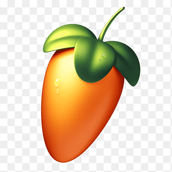
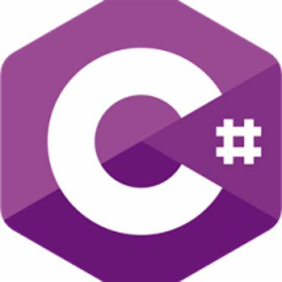

Guilherme barbosa da silva sou estudante de Engenharia de software na  Estácio e estou aprendendo sobre lógica da programação e Desenvolvimento FULL-STACK na
Estácio e estou aprendendo sobre lógica da programação e Desenvolvimento FULL-STACK na  FAISP
FAISP
Desenvolvimento full-stack engloba tanto o front-end como o back-end sendo uma área mais generalista
Atuando com a interface do usúario a interatividadeo front-end e o banco de dados as informações do usúario
Acesse Meu
Meu Hobby

SOBRE
- FLSTUDIO
- É uma estação de trabalho de áudio digital (DAW) desenvolvida pela Image-Line. É amplamente utilizada por produtores musicais para composição, gravação, edição, mixagem e masterização de música.
- ORIGEM
- Lançamento: Originalmente conhecido como Fruity Loops, o software foi lançado em 1997. A mudança de nome para FL Studio ocorreu em 2003, refletindo a expansão de suas funcionalidades. Desenvolvimento: Desde o seu lançamento, o FL Studio passou por várias atualizações, incorporando novas ferramentas e recursos, tornando-se uma das DAWs mais populares do mundo.
 Tópicos
Tópicos- Interface Intuitiva:
- FL Studio possui uma interface amigável e visual, facilitando o trabalho de produtores iniciantes e experientes. A janela de arranjo, o piano roll e o mixer são ferramentas chave para a criação musical.
- Instrumentos e Efeitos
- Inclui uma vasta biblioteca de instrumentos virtuais e plugins de efeitos, como sintetizadores, samplers e processadores de efeitos, permitindo a criação de uma ampla variedade de sons.
- Fluxo de Trabalho Baseado em Padrões:
- O software utiliza um sistema de arranjo baseado em padrões, onde os usuários podem criar sequências curtas e organizá-las em composições maiores, promovendo um fluxo de trabalho ágil.
- Atualizações e Comunidade:
- FL Studio é constantemente atualizado com novos recursos e melhorias. A Image-Line oferece suporte ativo e uma comunidade vibrante, onde usuários compartilham tutoriais, presets e samples.
Acesse minhas criações de projetos do Flstudio 2ªPágina
Meu Cronograma
Cronograma
| Cronograma | |||||||||||||||||||
| NEW | |||||||||||||||||||
| Horarios | |||||||||||||||||||
| NEW | |||||||||||||||||||
| 05:00 AM | 06:00 AM | 07:00 AM | 08:00 AM | 09:00 AM | 10:00 AM | 11:00 AM | 12:00 AM | 13:00 PM | 14:00 PM | 15:00 PM | 16:00 PM | 17:00 PM | 18:00 PM | 19:00 PM | 20:00 PM | 21:00 PM | 22:00 PM | 23:00 PM | 00:00 PM |
| NEW | |||||||||||||||||||
| Atividades | |||||||||||||||||||
| NEW | |||||||||||||||||||
| Inicio | Acordar | Despertar | Levantar | Planejar | Preparar o café | Ir a Academia | Treinar | Voltar | Almoçar | Estudar | Praticar | Meditar | Treinar | Ir ao trabalho | Intervalo | Voltar | Tomar banho | Jantar | Estudar |
| NEW | |||||||||||||||||||
| Status | |||||||||||||||||||
| NEW | |||||||||||||||||||
| Legal | Bom | Ótimo | Demais | Maravilha | Good | Nice | Show | Okay | Lets,place | Right now | Good joob | Very work | Very nice | Mais ou menos | Bom demais | Lets,place | Mais ou menos | Melhor | Muito bom |
| NEW | |||||||||||||||||||
| NOTA | |||||||||||||||||||
| NEW | |||||||||||||||||||
| 10 | 9 | 8 | 7 | 8 | 9 | 10 | 10 | 8 | 9 | 7 | 6 | 9 | 8 | 8 | 10 | 10 | 9 | 9 | 10 |
| NEW | |||||||||||||||||||
| FIM | |||||||||||||||||||
Estacio de Sá
SOBRE
 Missão
Missão- Integramos academia e gestão para oferecer uma educação transformadora ao maior número de pessoas, criando impacto positivo para a sociedade.
 Visão
Visão- EDUCAR PARA TRANSFORMAR
 Valores
Valores- Foco no aluno
- O aluno é nossa razão de ser.
- Gente e Meritocracia
- Valorizamos e reconhecemos o mérito do maior ativo que possuímos: nossa gente.
- Inovação
- Devemos criar e ousar sempre.
- Simplicidade
- Devemos ser simples para sermos ágeis e austeros.
- Resultado
- Perseguimos resultados extraordinários com paixão e método, agindo sempre como “donos”.
- Ética
- Não toleramos desvios de conduta.
- Excelência
- Perseguimos a excelência na prestação de serviços dentro e fora da sala de aula.
- Hospitalidade
- Tratamos as pessoas como gostamos de ser tratados.
Materias cursadas
Engenharia de Software
| Arquitetura Computacional |
| Se baseia na interação e comunicação entre o software e o hardware |
| Python |
| Linguagem de alto nível orientada e estruturada á objetos sendo multiparadigma |
| Desenvolvimento de Software |
| Projetar,criar e implementar softwares desde a plantação até a estrutura, manutenção e implantação |
| Segurança da Informação |
| Esquemas e planos de segurança de dados contra ataques cibernéticos realizados por hackers |
| Pensamento Computacional |
| Analisar de forma critica o modo de pensar e raciocinar do desenvolvedor |
| FIM |
Materias que Faltam
Engenharia de Software
| Comportamento Organizacional |
| Forma de liderar e se comportar dentro de uma organização |
| Modelagem de processos |
| É a representação gráfica de um processo de negócio, visando entender, analisar e melhorar a eficiência das operações. |
| Gerenciamento de Projetos |
| É o planejamento, execução e controle de projetos para garantir que sejam concluídos no prazo, dentro do orçamento e com a qualidade esperada. |
| Engenharia da Usabilidade |
| Refere-se à disciplina que se concentra na criação de produtos e sistemas que sejam fáceis e agradáveis de usar, priorizando a experiência do usuário. |
| Computação em Nuvem |
| É a entrega de serviços de computação, como armazenamento, processamento e aplicativos, pela internet, permitindo acesso remoto e escalabilidade. |
| FIM |
Linguagens
Linguagens
 Python
Python- Usada para desenvolvimento web, análise de dados, inteligência artificial e automação de tarefas devido à sua sintaxe simples e versatilidade.
 JAVA
JAVA- Ideal para desenvolvimento de aplicações empresariais, aplicativos móveis (Android) e sistemas de grande escala, oferecendo portabilidade e robustez.
 Javascript
Javascript- Principalmente utilizada para desenvolvimento web, permitindo a criação de interatividade em páginas e aplicativos front-end, além de ser usada no back-end com Node.js.
 C
C- Linguagem de baixo nível, amplamente usada para desenvolvimento de sistemas operacionais, drivers e aplicações que requerem alta performance e controle de hardware.
 C++
C++- Extensão do C, utilizada em desenvolvimento de software de sistemas, jogos e aplicações que requerem manipulação de memória e desempenho otimizado.
- C#
- Principalmente utilizada para desenvolvimento de aplicações no ecossistema Microsoft, incluindo aplicativos desktop, web e jogos com Unity.
 Ruby
Ruby- Famosa pelo framework Ruby on Rails, é usada para desenvolvimento web ágil e criação de aplicativos com foco em simplicidade e produtividade.
 PHP
PHP- Linguagem de script do lado do servidor, amplamente utilizada para desenvolvimento de websites dinâmicos e aplicações web, especialmente com bancos de dados.
Meus Certificados
Certificados
| Certificados | |||||
| NEW | |||||
| Desenvolvimento WEB | |||||
| NEW | |||||
| JAVA | HTML | HTML e CSS | Java Basico | Segurança da Informação | LGPD |
| NEW | |||||
 |
|
|
|
|
|
| NEW | |||||
| Baixe aqui | Baixe aqui | Baixe aqui | Baixe aqui | Baixe aqui | Baixe aqui |
| NEW | |||||
| FIM | |||||